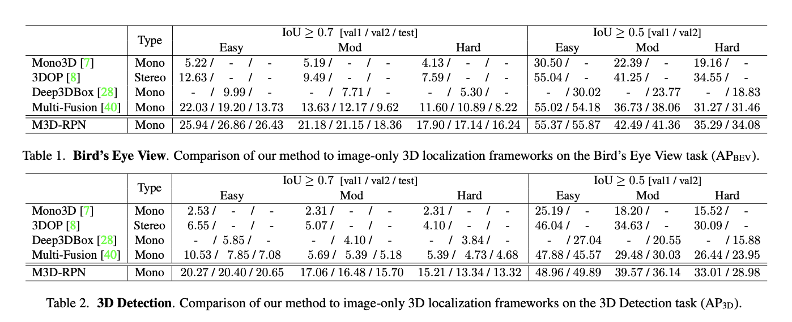

Introduction to PedView Experiments
The PedView system has undergone extensive testing to validate its accuracy and reliability in detecting pedestrians and predicting collisions. These experiments were conducted using varied datasets to ensure comprehensive evaluation under different real-world conditions.
Datasets Used
Key datasets included the nuScenes Dataset for 3D pedestrian detection and the specialized nuScenes-collision Dataset for collision prediction. These datasets provide diverse scenarios critical for testing the system’s robustness.

source : [https://www.nuscenes.org/]
Methodology
The experimental methodology was designed to rigorously test the PedView system’s pedestrian detection and collision prediction capabilities under various conditions. This section details the setup, execution, and evaluation criteria of the experiments conducted.
Experimental Setup
The experiments were conducted using a forward-facing monocular camera mounted on a test vehicle. The camera was calibrated to ensure accurate depth perception and field of view alignment. Data collection took place in both controlled environments and in real-world urban settings to capture a wide range of pedestrian behaviors and scenarios.
Data Collection
Data was gathered across multiple days at different times to include diverse lighting and weather conditions, which affect visual detection systems. The nuScenes and nuScenes-collision datasets provided additional simulated and real-world scenarios for comprehensive testing.
Testing Procedures
Each test scenario was run multiple times to ensure reliability of results. The system’s responses were recorded in terms of detection accuracy, response time, and the correctness of collision predictions. Pedestrian paths and vehicle dynamics were also logged for detailed analysis.
Evaluation Metrics
The performance of the PedView system was evaluated using several key metrics:
- Average Precision (AP): Measures the accuracy of the pedestrian detections at different IoU (Intersection over Union) thresholds.
- Recall: Assesses the system’s ability to detect all relevant instances of pedestrians within the scene.
- Precision: Evaluates the correctness of the detections, ensuring that the detected objects are indeed pedestrians.
- False Positives and False Negatives: Tracks the rate of incorrect detections and missed detections, which are critical for assessing the reliability of the system in real-world applications.
Statistical Analysis
Statistical methods were applied to analyze the data collected from the experiments. This included variance analysis to determine the consistency of the system under different conditions and t-tests to compare the performance of PedView against traditional detection systems.
Diagram illustrating the experimental setup and data collection processes.
Experimental Results
PedView demonstrated superior performance in both pedestrian detection and collision prediction, outperforming traditional systems in precision and recall across various testing scenarios.
Benchmarking Against M3D-RPN
Performance metrics from the M3D-RPN study, particularly in Bird’s Eye View (BEV) and 3D object detection tasks [2], provide a benchmark for evaluating PedView’s capabilities. Future experiments could incorporate similar metrics to rigorously assess enhancements derived from integrating M3D-RPN's methodologies [2].
Conclusions and Future Work
The experiments validate PedView’s efficacy and set a foundation for ongoing improvements in ADAS technologies, with plans to enhance detection capabilities and expand real-world applications.